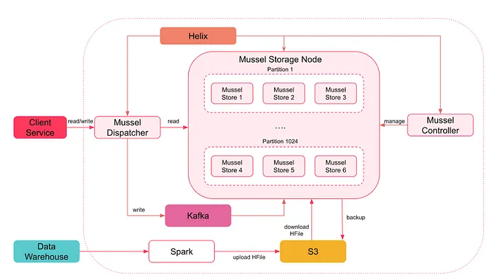
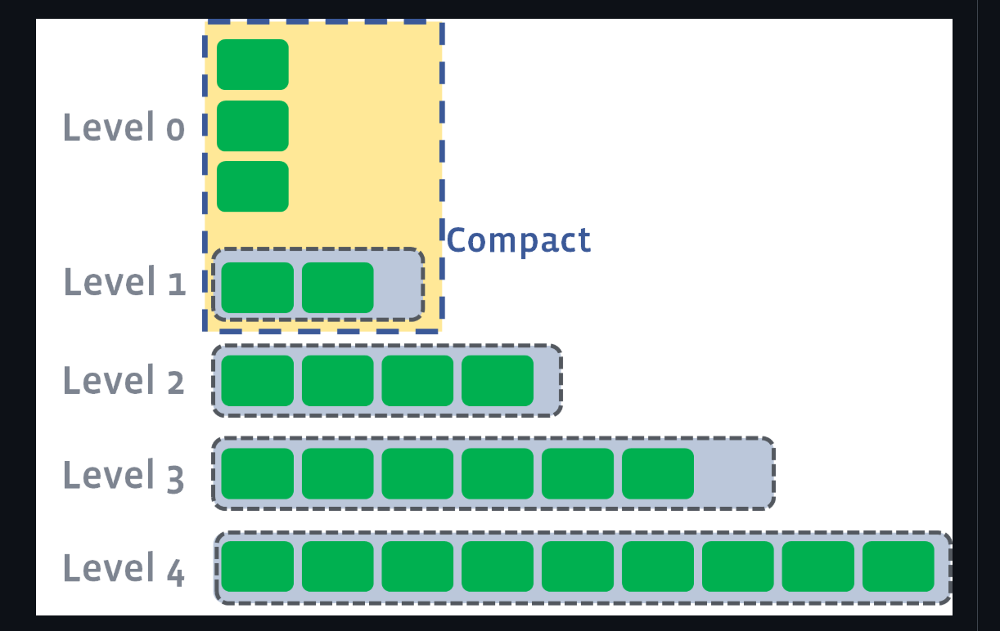
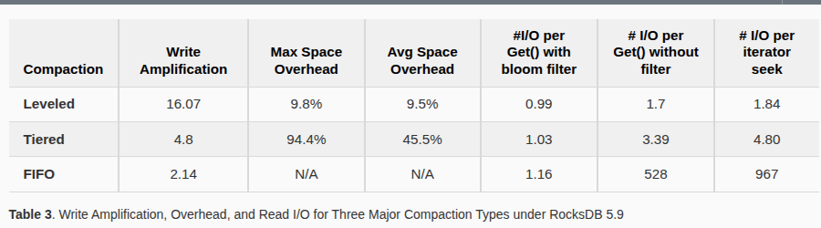

Personalized search lies at the heart of Airbnb's user experience. To deliver fast, accurate, and real-time recommendations to millions of users across a petabyte-scale dataset, Airbnb needed more than a conventional database—it needed a storage engine built around write-optimized data structures, efficient compaction strategies, and SSD-aware caching layers.
This section explores the architectural evolution that led Airbnb to adopt RocksDB and build its own key-value store, Mussel, to power personalized search at scale.
üéØ The Use Case
Airbnb's goal was to build a search engine capable of real-time, per-user query execution over billions of listings, impressions, and clickstream signals—all stored in key-value form. The system needed to support:
Ultra-fast writes for user events (up to 1M events/sec)
Low-latency reads (p99 < 100ms)
Efficient caching and disk layout strategies
❌ Why Traditional Systems Failed
Early experiments with MySQL and HBase quickly revealed critical shortcomings:
Random I/O for writes caused bottlenecks
Tail latencies exceeded SLA targets under load
Lack of control over compaction scheduling and caching
Poor support for fine-grained per-user partitioning

Figure 1: Architecture of Mussel – Airbnb's custom RocksDB-based key-value store powering personalized search. Source: Airbnb Engineering Blog.
Airbnb responded by building Mussel—a modular, embedded key-value engine based on RocksDB. It offered the configurability, write throughput, and compaction control that generalized systems lacked.
✅ Foundation: Log-Structured Merge Trees (LSM Trees)
RocksDB relies on a foundational data structure known as the Log-Structured Merge Tree (LSM Tree), originally described by O'Neil et al. in their 1996 paper. Unlike B-Trees, LSM Trees batch inserts in memory and flush them to disk in sorted order, enabling:
Amortized O(log N) write cost
Efficient merge-based compaction
High sequential write throughput on SSDs

Figure 2: RocksDB's LSM Tree layout with Leveled Compaction. New SSTables are flushed from memory to disk and later merged level-by-level. Source: RocksDB Wiki.
This structure is ideal for Airbnb's use case where writes outnumber reads and disk I/O must be minimized. The LSM Tree also enabled Airbnb to tune compaction styles—choosing between leveled, universal, and FIFO strategies depending on access patterns.
ü߆ Why RocksDB Was a Game Changer
According to RocksDB: Evolution of Development Priorities (Dong et al., 2021), RocksDB allowed application owners to:
Tune write amplification vs. read efficiency
Optimize cache locality with block-level caching
Control compaction rate and disk layout at column-family level

Figure 3: Write amplification vs. compaction style. Airbnb used Universal Compaction for faster writes at the cost of space efficiency. Source: ACM digital library (DL) https://dl.acm.org/doi/10.1145/3483840.
üîç Read Optimization: Bloom Filters
Read paths in RocksDB are accelerated using Bloom Filters, a probabilistic data structure that checks set membership in O(k) time with minimal space. RocksDB associates Bloom Filters with each SSTable to skip unnecessary disk I/O during point lookups.
Figure 4: Bloom Filters used with each SSTable to skip reading tables that don't contain the queried key. Source: O'Neil et al., LSM Tree paper.
Persistent Bloom Filters (PBF), as explored by Peng et al. in SIGMOD 2018, also allow temporal queries—a crucial capability for searching user signals over time windows, such as "has user X clicked in the last 10 minutes?".
"RocksDB gave us the ability to shape our key-value access patterns with compaction, caching, and Bloom filter tuning—without rebuilding everything from scratch."
— Airbnb Infrastructure Team
üß± Section 2: Core Data Structures and Algorithms Used
1. LSM Tree (Log-Structured Merge Tree)
A Log-Structured Merge Tree (LSM Tree) is a write-optimized hierarchical structure designed for high-ingest systems like databases and key-value stores. Instead of writing directly to disk for every update (as B-Trees do), LSM Trees accumulate writes in memory and periodically flush them to disk in bulk. This transforms many small random writes into fewer sequential writes — a massive win on SSDs.
The tree consists of a memory component (C0) and multiple disk levels (C1, C2...). Each level holds larger, sorted files, and the system periodically merges files across levels through a process called compaction.
Figure 1: LSM Tree layers: writes enter C0 (in-memory) and flush to sorted disk-based levels (C1, C2...) via compaction. Source: Wikipedia
RocksDB is a high-performance key-value engine built around the LSM Tree model. New data enters a MemTable in RAM. Once full, it is flushed to disk as an SSTable (Sorted String Table). These SSTables are compacted into progressively larger levels, maintaining sorted order.
Airbnb's Mussel system, based on RocksDB, uses this architecture to ingest over 1 million signals per second — from user views and clicks to host updates — without compromising read performance.
⏱ Time Complexities
Operation
Complexity
Insert
Amortized O(log N)
Read
O(log L × log N) (L = SSTable levels)
Delete
O(log N) (via tombstone markers)
2. Bloom Filters
A Bloom Filter is a probabilistic data structure that answers: "Could this key exist?" It gives fast lookups in constant time using multiple hash functions and a compact bit array. The trade-off? It might say "yes" when the answer is "no" (false positives), but it will never miss a key that exists.
RocksDB uses Bloom Filters with every SSTable to avoid unnecessary disk reads. When looking up a key, the engine queries the Bloom filter first. If the filter says "definitely not here," the SSTable is skipped entirely — saving costly disk I/O.
Figure 2: Bloom filters use multiple hashes to set bits in a bit array. All bits must be 1 to indicate potential membership. Source: Wikipedia
Space: O(n log(1/ε)) for n elements, ε = false positive rate
3. MemTable (Write Buffer)
A MemTable is the first stop for new writes. It's an in-memory data structure — typically a Skip List or Red-Black Tree — that temporarily stores key-value pairs. Once it fills up, it flushes its contents to disk as an immutable SSTable.
In RocksDB, this buffering reduces the cost of disk writes and allows compactions to batch multiple changes efficiently. While active, MemTables also serve recent reads — ensuring low-latency access to fresh data.
⏱ Time Complexities
Insert/Search/Delete: O(log n)
Flush: O(n), written sequentially to disk
4. Compaction Algorithms
Compaction is the LSM Tree's cleanup crew. It merges SSTables across levels, removes obsolete keys (e.g., overwritten or deleted), and maintains sorted order. Without compaction, RocksDB would become a read-performance disaster due to too many SSTables.
RocksDB supports multiple compaction styles:
Leveled Compaction: Aggressively merges SSTables into fixed-size levels. Great for reads.
Universal Compaction: Flexible, less aggressive merging. Ideal for fast-write workloads like Airbnb's signal ingestion pipeline.
FIFO Compaction: Deletes old files in order — used for time-series or log data.
Figure 3: In Leveled Compaction, newer SSTables are merged downward into larger levels. Source: RocksDB GitHub Wiki
Amortized: Lower, depending on tuning of levels and compaction triggers
5. Cache Layer (LRU Cache)
RocksDB includes a block cache to store frequently accessed data blocks from SSTables. It uses the Least Recently Used (LRU) replacement policy — implemented with a combination of a hash map and a doubly linked list.
This is crucial for performance at Airbnb: if a user views a listing multiple times in a short period, the data stays hot in cache, avoiding repeated disk reads and improving response time.
Figure 4: LRU cache mechanism stores frequently accessed items at the front of a list, evicts least-recently-used ones. Source: Wikipedia
Building a high-performance key-value store like Airbnb's Mussel means making deliberate tradeoffs between write speed, read latency, memory usage, and compaction cost. Each of the data structures introduced earlier (LSM Tree, Bloom Filter, MemTable, etc.) contributes to specific performance characteristics.
üìäBefore RocksDB (Legacy Systems)
Writes: MySQL and DynamoDB performed random I/O and incurred locking overhead → poor throughput under heavy writes.
Reads: Tail latencies (p95/p99) spiked under concurrent traffic. Reads were slower due to frequent disk I/O.
Scalability: Needed horizontal scaling via more DB instances → increased cost and operational complexity.
üöÄAfter RocksDB + Mussel
Writes: Batched via MemTables, flushed to disk as sorted files → high throughput
Reads: Bloom filters and LRU cache reduced tail latencies dramatically
Disk usage: Compaction reduced fragmentation and deleted stale keys
Scalability: Embedded RocksDB engines at service boundaries eliminated the need for separate DB clusters
ü߆Component-by-Component Tradeoffs
Component
Benefit
Tradeoff
LSM Tree
Fast writes (sequential, batched)
Slower reads unless mitigated with filters or caches
Bloom Filter
Reduces unnecessary disk reads
Uses extra memory; allows false positives
MemTable
In-memory buffering for fast ingest
Risk of data loss if not flushed and crash occurs
Compaction
Keeps disk clean and sorted
CPU and I/O intensive during heavy merges
LRU Cache
Speeds up hot reads
Consumes significant memory under high traffic
üìâReal Performance Gains
According to Airbnb's Mussel blog and internal benchmarks:
1M+user events/sec ingested with low CPU overhead
<100msp99 latency for personalized search lookups
30-40%less disk usage after compaction vs legacy HBase
Figure 6: Tail latency improvement after switching to RocksDB in Mussel. Source: Airbnb Engineering Blog
Adoption and Performance of Mussel
Mussel has become a core component of Airbnb’s data infrastructure, supporting a wide range of services that rely on key-value storage. It serves as the backbone for applications requiring reliable, low-latency access to derived data.
130TB of data: Mussel manages approximately 130TB of data across 4,000 tables in its production environment.
>99.9% availability: Ensures minimal downtime, providing a consistent and reliable user experience.
800,000 QPS: Handles an impressive read query rate, making it highly suitable for read-heavy workloads.
35,000 write QPS: Supports real-time updates alongside bulk data loads.
P95 read latency: Achieves an average P95 read latency of less than 8 milliseconds.